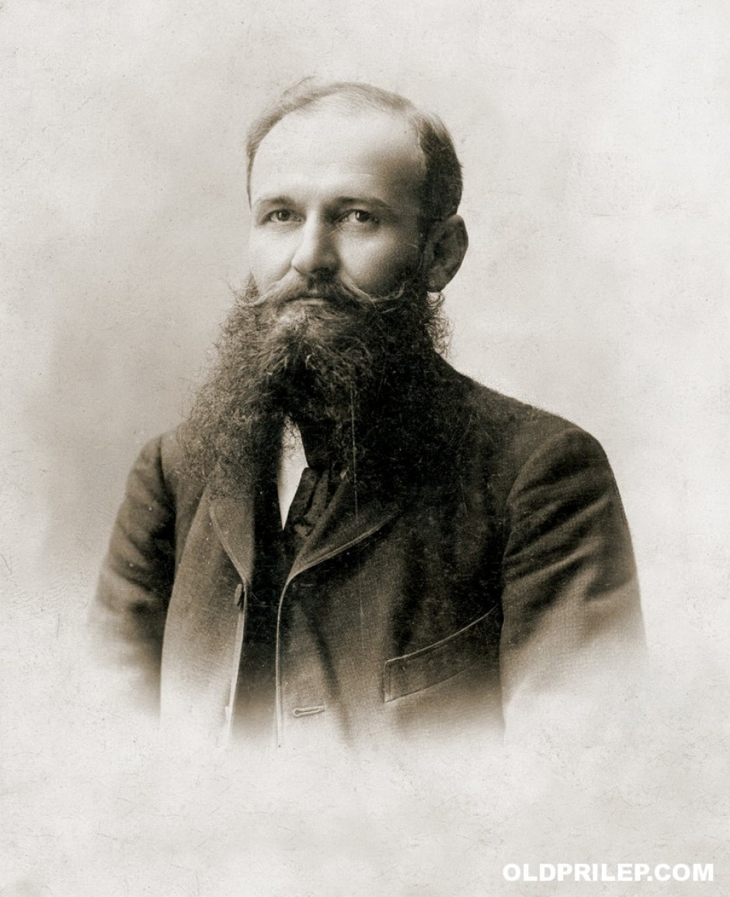
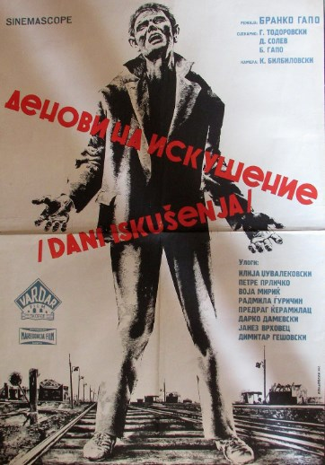
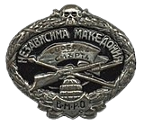
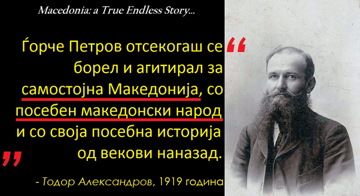
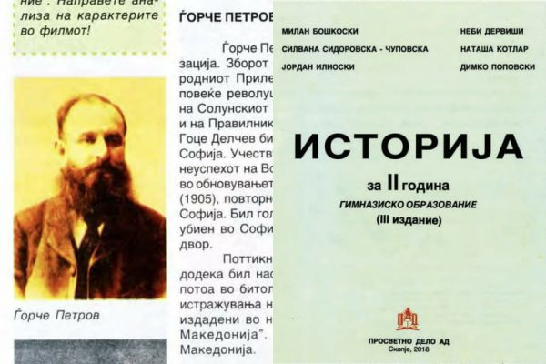
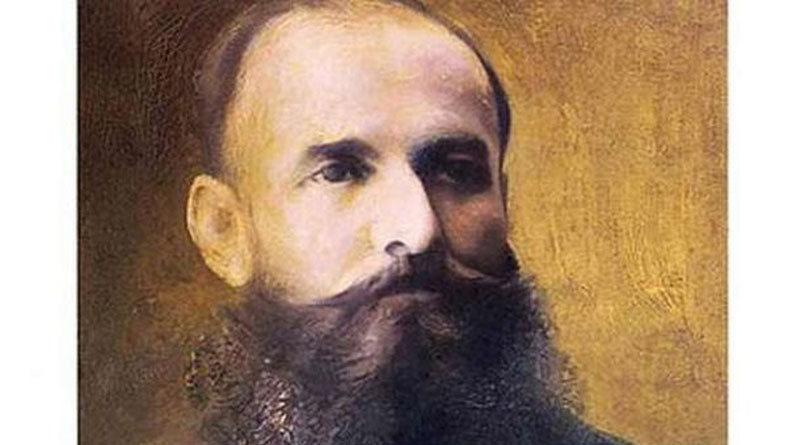

| Почетна | За Ѓорче Петров | Атентат врз Ѓорче Петров | Предисторија | Причини | Инспирација | Денови на искушение | Листа | Резиме |
Роден е во 1864 година во с. Варош, Прилепско. Образованието го стекнал во Прилеп, Битола и во Солунската егзархиска гимназија од каде во 1885 година бил исклучен заедно со дванаесетина другари. Учителствувал во Штип, Скопје, Битола и Солун (1895-1897). Додека учествувал во Битола станува и член на ТМОРО. Основач е и главен редактор на весникот „Бунтовник“. Во 1895 година доаѓа во Солун, и веднаш станал член на ЦК. Во 1896 година ја публикувал својата книга „Материјали за проучување на Македонија“. Во 1896 година, заедно со Гоце Делчев го изработиле Уставот на ТМОРО. Од 1896 до 1902 година, заедно со Гоце Делчев, бил задграничен претставник на ТМОРО во Софија. За време на Илинденското востание учествувал со голема чета во борбите во Прилепско-мариовскиот крај. Учесник е на Прилепскиот (1904), Струмичкиот (1905) и Рилскиот конгрес (1905), На Рилскиот конгрес на ВМРО бил избран повторно за член на Задграничното претставништво во Софија.
Атентатот врз Ѓорче Петров бил извршен на 28 јуни 1921 година на улицата „Тробарска“ во Софија. Убиството било спроведено од страна на Турчинот Реџеп, член на ВМРО. На денот на убиството, Ѓорче Петров по излегувањето од работа свратил во кафеаната на Иван Бандев, која се наоѓала на улицата „Егзарх Јосиф“ во Софија. Таму тој пиел ракија со Петар Чаулев, член на ЦК на ВМРО. Реџеп влегол во кафеаната и останал да пие пиво. Откако Ѓорче Петров ја напуштил кафеаната околу 7:30 часот, тргнал дома, при што терористот го следел и пред портата на неговата куќа, го убил. Се претпоставува дека Тодор Александров, лично го повикал кај себе терористот Реџеп и му наложил да го убие Ѓорче Петров, на што атентаторот се согласил.
По завршувањето на Првата светска војна, атентаторското дејствување во македонското револуционерно движење почнало најмногу да се практикува во директните пресметки помеѓу разните македонски организации, струи и фракции и во борбата што се водела за престиж во позициите на македонското национално ослободително движење. На таквиот начин на дејствување најдобро се приспособила организацијата ВМРО, која подготвила голем број атентати врз припадници од македонското револуционерно движење, без разлика на нивната идеолошко-политичка ориентација и со терористичките методи на дејствување отворила нова страница во историјата на македонското националноослободително движење, со што одиграла клучно место во периодот меѓу двете светски војни.
Зад атентатот на Ѓорче Петров веројатно стоела ВМРО на Тодор Александров, иако последниот тоа го одрекувал, а мотивите биле личната нетрпеливост меѓу двајцата, како и разликите што помеѓу нив постоеле во однос на начините и методите на борба и патиштата за решавање на македонското прашање.
На оваа тема 1965 г. снимен е филмот Денови на искушение во режија на Бранко Гапо.
На оваа тема е снимен и албумот Организацијата од зад агол
|  |  |  |
|  |  |  |
Денови на искушение“ — првиот долгометражен игран филм на Бранко Гапо од 1965 година. Филмот е снимен според драмското дело „Црнила“ на Коле Чашуле чиј основен мотив е политичкото убиство, атентатот, над Ѓорче Петров, извршен од врховистите во Софија во 1921 година. Драмата, всушност, ја отсликува заднината на овој злосторнички чин, подготовките за него и неговите глумци, а нејзината сценаристичка адаптација на Димитар Солев и Гане Тодоровски главно ја следи истата драматуршка структура. Екранизацијата на оваа драма доаѓа по забележителниот успех што таа го постигнала на театарските сцени во Македонија.
| година | настан |
|---|---|
| 1864 | роден с.Варош |
| 1895 | станува член на цк |
| 1896 | го изработува уставот на тморо |